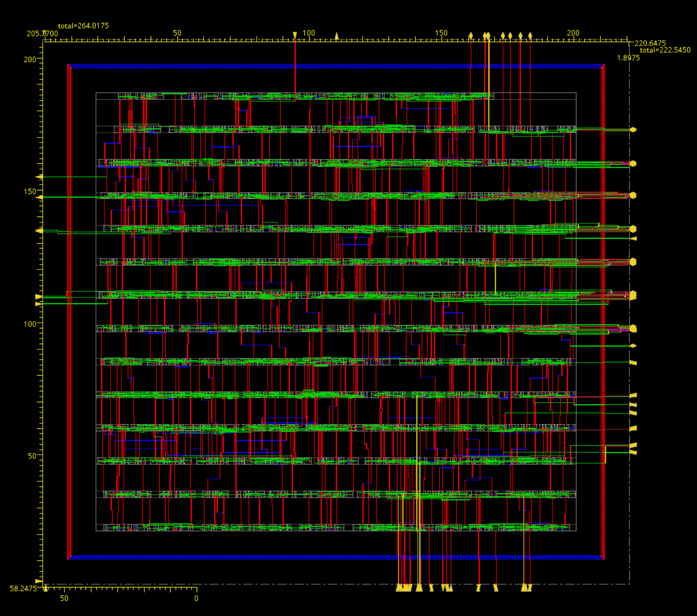
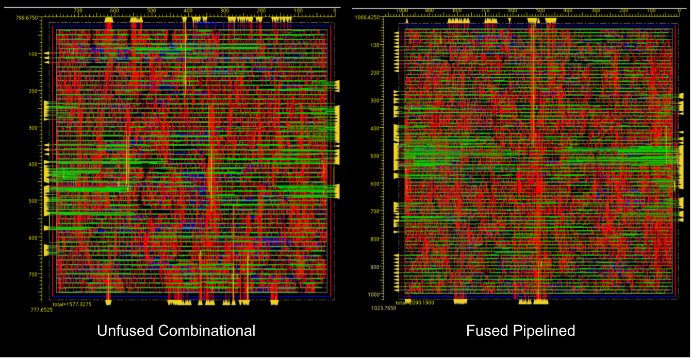
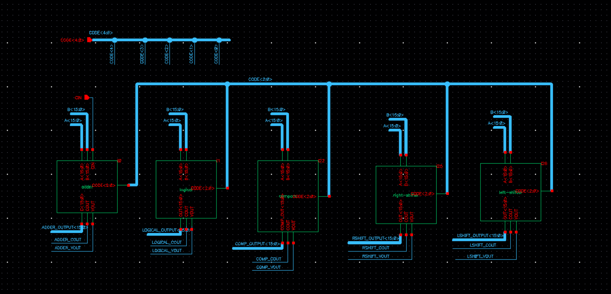
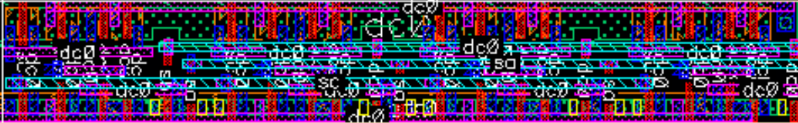
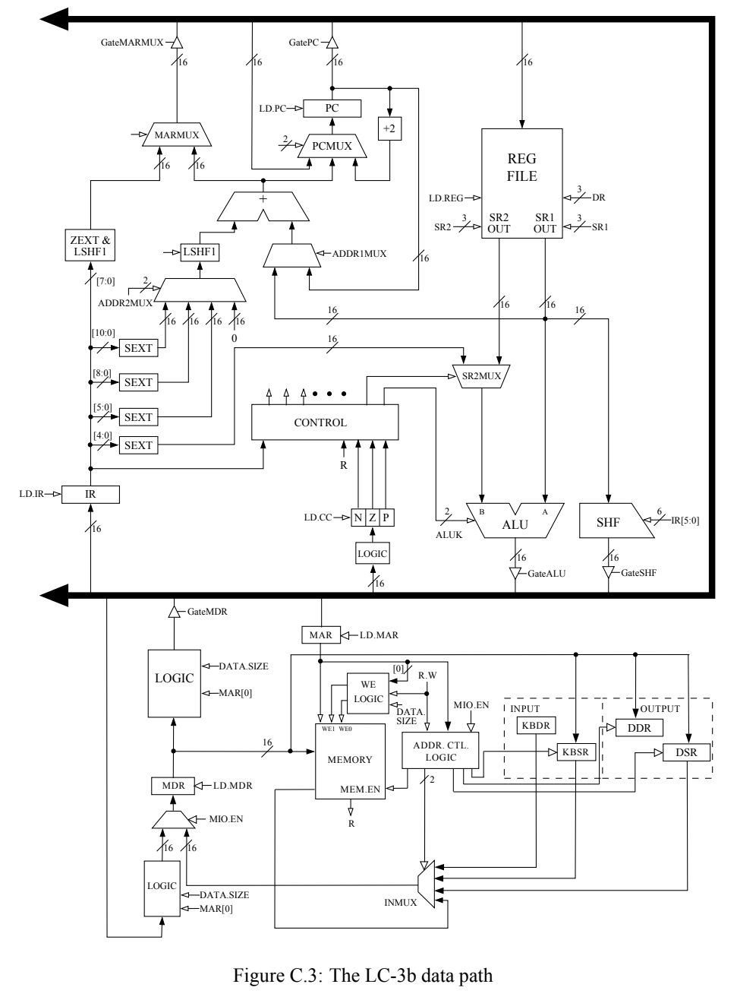
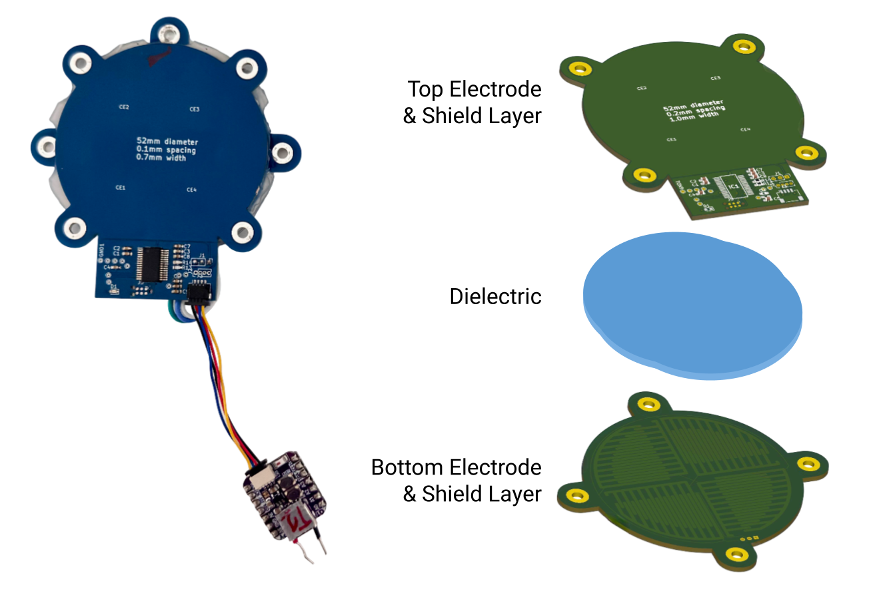

Hi, I'm
Isabella Zaens.
I recently completed my BS in Electrical & Computer Engineering at UT Austin and am beginning my Master's in ECE at Rice University this fall.
I've interned at Texas Instruments and AMD, working on high-voltage IC test engineering and GPU system validation. My interests span digital design, computer architecture, and hardware-software co-design.

SoC SSP & WISHBONE Bus Controller
↗Designed a SoC in Verilog with an 8-bit SSP, 32-bit WISHBONE bus controller, and clock management unit. Synthesized and placed-and-routed in a 45nm PDK using Synopsys and Cadence tools.

FP16 Matrix Multipliers
↗Compared unfused combinational and fused pipelined systolic 3×3 FP16 matrix multipliers. Analyzed area, power, and timing tradeoffs after synthesis and APR in a 45nm process.

16-bit ALU Custom IC
↗Gate-level ALU for a RISC processor using a Kogge-Stone adder and barrel shifter. Designed in Cadence Virtuoso, verified in NC Verilog, and timing analyzed with Synopsys PrimeTime.

4-bit SRAM Custom IC
↗Full-custom transistor-level SRAM cell designed and laid out in Cadence Virtuoso. Characterized read/write/access timing with HSPICE and Spectre simulations; validated with DRC and LVS.

LC-3b Microarchitecture Simulator
↗Pipelined cycle-accurate simulator for the LC-3b ISA in C, with microcode, exception handling, and virtual memory via a one-level page table with full address translation.

OreoFT — Capacitive 6-Axis Force/Torque Sensor
↗Low-cost ($17.72) capacitive FT sensor using stacked PCBs and 3D printing. PSoC + ESP32-S3 for 16-channel wireless acquisition; neural-network calibration across 16 design variants.
Developed a C++ diagnostic program for the handler interface board of an isolated DC/DC module on ETS-364 ATE. Characterized restart behavior and body diode of isolated DC/DC modules across temperature for product qualification. Executed high-voltage tests on half-bridge driver lead frames, analyzing leakage current and arcing behavior.
Executed system-level tests in Java on V93K ATE for Radeon GPUs for production and characterization flows. Characterized performance by generating Schmoo plots across voltage, frequency, and temperature corners. Examined GPU IP blocks including PCIe, VCE/VCN, and memory controller to support silicon debug and validation.
Implemented EtherCAT communication for an EMG-driven robotic hand exoskeleton designed to assist individuals with spinal cord injuries, improving real-time signal acquisition reliability and timing. Created wiring diagrams and technical documentation to support the development of a second-generation system.
Graduate ECE
- CMOS VLSI
- Tactile Sensing for Robotics
Undergraduate ECE
- Computer Architecture
- Digital Logic Design
- Digital Signal Processing
- Embedded Systems
- Data Structures
- Algorithms